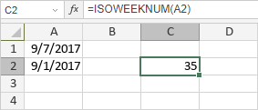

ISOWEEKNUM funkcija
ISOWEEKNUM funkcija je jedna od funkcija za datum i vreme. Koristi se da vrati broj ISO nedelje u godini za određeni datum. Vraća broj između 1 i 54.
Sintaksa
ISOWEEKNUM(date)
ISOWEEKNUM funkcija ima sledeći argument:
| Argument | Opis |
|---|---|
| date | Datum za koji želite da pronađete ISO broj nedelje. Može biti referenca na ćeliju koja sadrži datum ili datum dobijen pomoću DATE funkcije ili druge funkcije za datum i vreme. |
Napomene
Kako primeniti ISOWEEKNUM funkciju.
Primeri
Slika ispod prikazuje rezultat koji vraća ISOWEEKNUM funkcija.
